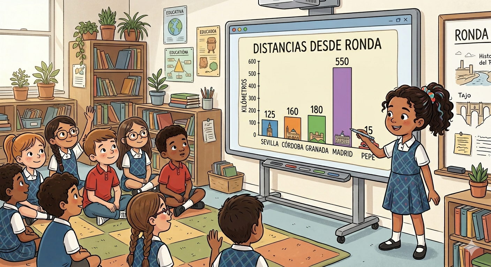

Introducción

Imagen generada con Gemini
Ya has recogido información a través de entrevistas, has analizado distancias y tiempos de viaje, y has investigado aspectos culturales como la gastronomía, los monumentos y las fiestas. Ahora toca transformar toda esa información en una presentación visual que explique tu investigación de forma clara, ordenada y atractiva.
Esta presentación será parte de tu producto final como periodista, que se evaluará con la rúbrica del proyecto.
Actividad principal
Tu misión es crear una presentación digital o lapbook que incluya:
1. Portada
- Título del proyecto
- Tu nombre y curso
- Una imagen relacionada con la temática del proyecto (entrevistas, mapas o ciudades)
2. Datos recogidos en la entrevista
- Información sobre la persona entrevistada
- Ciudad donde vive actualmente
- Distancia y tiempo de viaje desde Ronda
- Fotografías o imágenes relacionadas con la ciudad
3. Representación de datos
- Gráfico de barras con las distancias de la clase
- Interpretación sencilla de los resultados
4. Conclusiones del periodista
- 3 ideas clave sobre lo que has descubierto en tu investigación
- Comparación entre la ciudad del entrevistado y Ronda
5. Reflexión cultural
- Aspectos que más te han llamado la atención
- Diferencias y semejanzas entre culturas.
6. Exposición final
- Presentación oral del trabajo al resto de la clase
- Explicación clara de lo aprendido durante el proyecto
Recuerda: tu presentación debe ser clara, ordenada y creativa, como la de un auténtico periodista que cuenta una historia al mundo.
Tarea
Crea tu presentación en Canva siguiendo estos pasos:
- Entra en Canva y elige una plantilla de presentación que te guste.
- Completa cada diapositiva con la información de tu entrevista, los datos recogidos y las imágenes.
- Añade los gráficos que has elaborado en clase y tus comparaciones culturales.
- Incluye tus conclusiones como periodista sobre lo que has descubierto.
- Inserta imágenes o recursos que hagan tu trabajo más visual y atractivo.
- Guarda tu presentación y compártela con tu profesor/a mediante el enlace.
Recuerda: este Canva será parte de tu producto final como periodista, así que cuida el diseño, la claridad y la presentación de la información.
Texto
En este paso utilizarás:
- Canva: para crear tu presentación final
- Google Maps: para calcular distancias y tiempos de viaje
- Navegador web: para buscar imágenes en bancos de recursos como Pixabay o similares
- Plantilla del proyecto: para organizar toda la información de tu entrevista
Tu presentación será evaluada según:
- Claridad en la exposición de la información
- Corrección en el uso de los datos (distancias y gráficos)
- Calidad y coherencia del contenido cultural
- Uso adecuado de Canva como herramienta digital
- Expresión y comunicación oral durante la presentación final
Recuerda: las imágenes que utilices deben ser adecuadas, libres de derechos y ayudarte a explicar mejor tu investigación como un auténtico periodista.